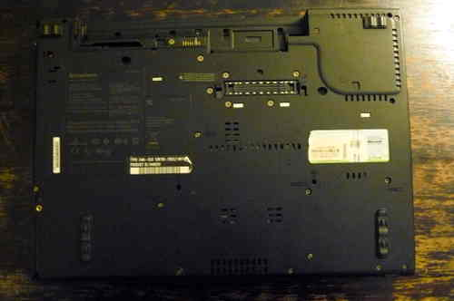
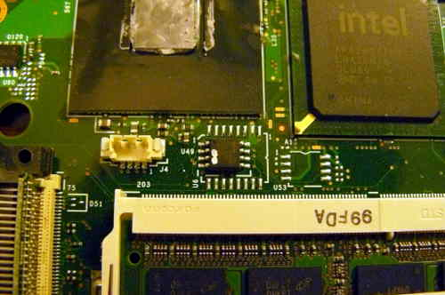

Initial BBB configuration
Refer to bbb_setup.html for how to
setup the BBB for flashing.
The following shows how to connect clip to the BBB (on the P9 header), for SOIC-16 (clip: Pomona 5252):
POMONA 5252 (correlate with the BBB guide)
=== ethernet jack and VGA port ====
NC - - 21
1 - - 17
NC - - NC
NC - - NC
NC - - NC
NC - - NC
18 - - 3.3V PSU RED
22 - - NC - this is pin 1 on the flash chip
=== SATA port ===
This is how you will connect. Numbers refer to pin numbers on the BBB, on the plugs near the DC jack.
The following shows how to connect clip to the BBB (on the P9 header), for SOIC-8 (clip: Pomona 5250):
POMONA 5250 (correlate with the BBB guide)
=== RAM slots ====
18 - - 1
22 - - NC
NC - - 21
3.3V PSU RED - - 17 - this is pin 1 on the flash chip
=== slot where the AC jack is connected ===
Disassembly
Remove all screws:

Remove the HDD and optical drive:

Remove the hinge screws:


Remove the palm rest and keyboard:


Remove these screws, and then remove the bezel:


Remove the speaker screws, but don't remove the speakers yet
(just set them loose):


Remove these screws, and then remove the metal plate:


Remove the antennas from the wifi card, and then
start unrouting them:


Disconnect the LCD cable from the motherboard:


Remove the hinge screws, and then remove the LCD panel:


Remove this:


Remove this long cable (there are 3 connections):


Disconnect the speaker cable, and remove the speakers:

Remove the heatsink screws, remove the fan
and then remove the heatsink/fan:


Remove the NVRAM battery:


Remove this screw:


Disconnect the AC jack:


Remove this screw and then remove what is under it:

Remove this:

Lift the motherboard (which is still inside the cage)
from the side on the right, removing it completely:


Remove all screws, marking each hole so that you know
where to re-insert them. You should place the screws in
a layout corresponding to the order that they were in
before removal:


Remove the motherboard from the cage, and the SPI flash
chip will be next to the memory slots:


Connect your programmer, then connect GND and 3.3V


A dedicated 3.3V PSU was used to create this guide, but
at ATX PSU is also fine:

Of course, make sure to turn on your PSU:

Now, you should be ready to install libreboot.
Flashrom binaries for ARM (tested on a BBB) are distributed in libreboot_util. Alternatively,
libreboot also distributes flashrom source code which can be built.
Log in as root on your BBB, using the instructions in bbb_setup.html#bbb_access.
Test that flashrom works:
# ./flashrom -p linux_spi:dev=/dev/spidev1.0,spispeed=512
In this case, the output was:
flashrom v0.9.7-r1854 on Linux 3.8.13-bone47 (armv7l)
flashrom is free software, get the source code at http://www.flashrom.org
Calibrating delay loop... OK.
Found Macronix flash chip "MX25L6405(D)" (8192 kB, SPI) on linux_spi.
Found Macronix flash chip "MX25L6406E/MX25L6436E" (8192 kB, SPI) on linux_spi.
Found Macronix flash chip "MX25L6445E/MX25L6473E" (8192 kB, SPI) on linux_spi.
Multiple flash chip definitions match the detected chip(s): "MX25L6405(D)", "MX25L6406E/MX25L6436E", "MX25L6445E/MX25L6473E"
Please specify which chip definition to use with the -c <chipname> option.
How to backup factory.rom (change the -c option as neeed, for your flash chip):
# ./flashrom -p linux_spi:dev=/dev/spidev1.0,spispeed=512 -r factory.rom
# ./flashrom -p linux_spi:dev=/dev/spidev1.0,spispeed=512 -r factory1.rom
# ./flashrom -p linux_spi:dev=/dev/spidev1.0,spispeed=512 -r factory2.rom
Note: the -c option is not required in libreboot's patched flashrom, because
the redundant flash chip definitions in flashchips.c have been removed.
Now compare the 3 images:
# sha512sum factory*.rom
If the hashes match, then just copy one of them (the factory.rom) to a safe place (on a drive connected to another machine, not
the BBB). This is useful for reverse engineering work, if there is a desirable behaviour in the original firmware
that could be replicated in coreboot and libreboot.
Follow the instructions at ../hcl/gm45_remove_me.html#ich9gen
to change the MAC address inside the libreboot ROM image, before flashing it.
Although there is a default MAC address inside the ROM image, this is not what you want. Make sure
to always change the MAC address to one that is correct for your system.
Now flash it:
# ./flashrom -p linux_spi:dev=/dev/spidev1.0,spispeed=512 -w path/to/libreboot/rom/image.rom -V

You might see errors, but if it says Verifying flash... VERIFIED at the end, then it's flashed and should boot.
If you see errors, try again (and again, and again); the message Chip content is identical to the requested image
is also an indication of a successful installation.
Example output from running the command (see above):
flashrom v0.9.7-r1854 on Linux 3.8.13-bone47 (armv7l)
flashrom is free software, get the source code at http://www.flashrom.org
Calibrating delay loop... OK.
Found Macronix flash chip "MX25L6405(D)" (8192 kB, SPI) on linux_spi.
Reading old flash chip contents... done.
Erasing and writing flash chip... FAILED at 0x00001000! Expected=0xff, Found=0x00, failed byte count from 0x00000000-0x0000ffff: 0xd716
ERASE FAILED!
Reading current flash chip contents... done. Looking for another erase function.
Erase/write done.
Verifying flash... VERIFIED.
Back to top of page.